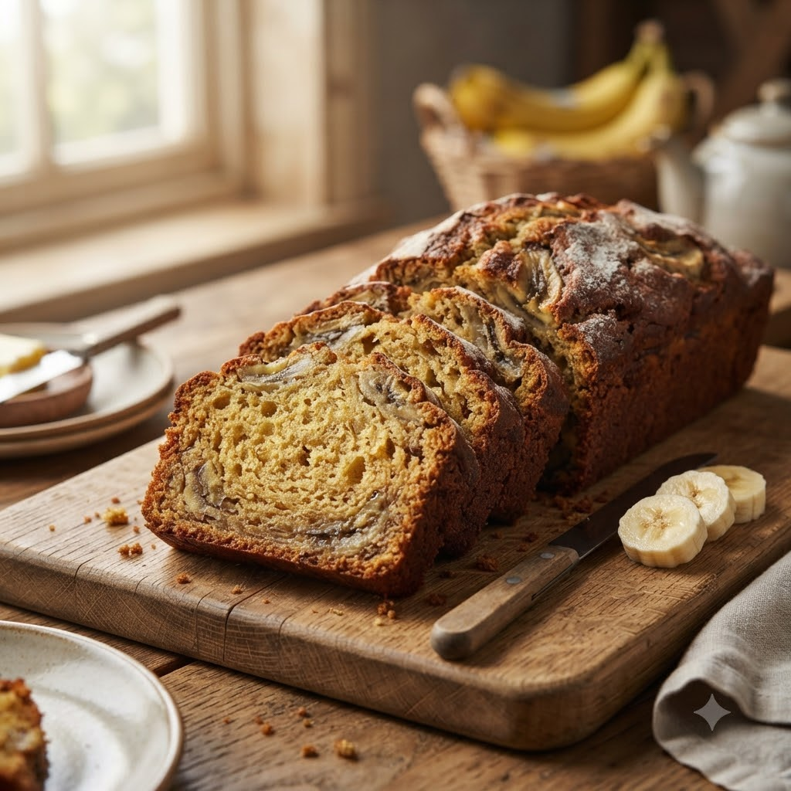

Banana Bread

Banana Bread
Airfryer – Bake 160°C 38 min — Serves 7
Ingredients
- 3 ripe bananas, mashed
- 1/3 cup melted butter
- 3/4 cup sugar
- 1 egg (or flax egg)
- 1 tsp vanilla extract
- 1 tsp baking soda
- Pinch of salt
- 1.5 cups flour
Method
1Preheat: Preheat the Airfryer to 160°C for 4 minutes before adding the food to the basket.
2Mix mashed banana with melted butter, sugar, egg and vanilla.
3Fold in baking soda, salt and flour until just combined.
4Pour batter into a small greased loaf pan that fits the basket.
5Bake at 160°C for 38 minutes, covering loosely with foil after 20 minutes if browning too fast.
6Cool for 10 minutes before slicing.